The sine and cosine functions are derived by looking at points on a unit circle and breaking them up into their x and y components.
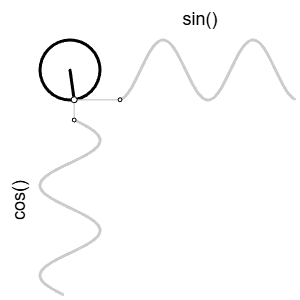
This means that the sin and cos functions can be used to find points on a circle given that we know:
The sine of the angle gives us the y coordinate, and the cosine gives us the x coordinate on a unit circle (radius 1):
x = cos(angle);
y = sin(angle);For a circle with a larger radius, we multiply by that radius to get values that are further than 1 from the center:
x = radius * cos(angle);
y = radius * sin(angle);You'll notice in the workspaces today we call:
angleMode(DEGREES);This is because the sin() and cos() functions naturally use RADIANS, which range from 0 - 2π. This function call switches them to angles, which are in the 0 - 360 range
Open the Points on a Circle workspace.
If you run the program, you will see four lines drawn:
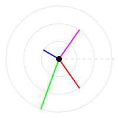
There you have four lines drawn from the center of the circle. Each line has:
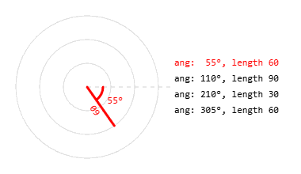
The lines have these radius/angle pairs:
Your task: put a small circle at the endpoint of each line.
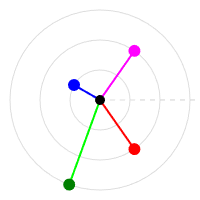
We'll do this by using the circle formula with each line's radius and angle.
Example for the red line:
In draw(), uncomment these lines:
// Calculate the location 60 pixels from center, rotated 55 degrees
let xRed = 60 * cos(55);
let yRed = 60 * sin(55);
fill("red");
circle(xRed, yRed, 6);Run the program and confirm that a red circle appears at the endpoint of the red line.
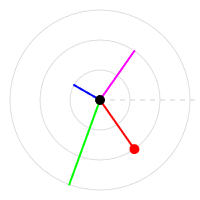
Your Task: Repeat this process for the green, blue, and magenta lines, each time substituting the correct radius and angle in the circle formula. In the end you should have a circle at the endpoint of all four lines.
The circle formula above gives coordinates around (0, 0).
At the start of draw(), the code calls:
translate(100, 100);This temporarily moves the origin (0, 0) to the center of the canvas, so we can use the simple formula:
let x = radius * cos(angle);
let y = radius * sin(angle);If we didn't use translate(), we would need to add the center coordinates to each point:
let x = centerX + radius * cos(angle);
let y = centerY + radius * sin(angle);This would keep the circle shape, but shift the points away from the corner of the canvas
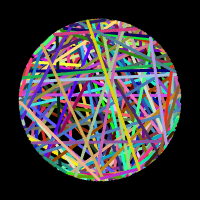
The rubber band ball design is made by drawing many randomly colored lines. Each line connects two random points that are the same distance from the center.
draw() that runs 200 times.let angle1 = random(360);let x1 = 80 * cos(angle1);
let y1 = 80 * sin(angle1);let angle2 = random(360);
let x2 = 80 * cos(angle2);
let y2 = 80 * sin(angle2);(x1, y1) to (x2, y2).Run the program and observe the “rubber band ball” effect.
Open the Circle Art workspace.
The following code is used to find the point to draw:
let x = 45 * cos(frameCount);
let y = 45 * sin(frameCount);
Because we are using angleMode(DEGREES);, frameCount is treated as an angle in degrees. Since frameCount increases every frame, this point orbits around the center of the canvas.
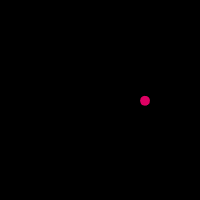
Currently only one dot is drawn at a time. To make a design, we will draw circles at many angles.
for loop to draw() whose loop variable represents an angle.for (let angle = 0; angle < 360; angle += 20) {
let x = 45 * cos(angle);
let y = 45 * sin(angle);
circle(x, y, 6);
}This should draw evenly spaced circles around the center.
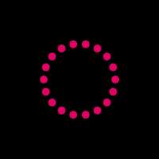
To turn this into a spirograph-style design:
fill(...) call to:
noFill();circle(x, y, 45);Let the program run and observe the overlapping circle pattern.
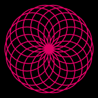
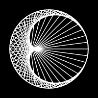
Open the Centroid workspace.
This design is created by connecting pairs of points on a circle. Each line connects one point to another point at twice its angle. Point at angle 5 connects to angle 10, 10 to 20, 15 to 30, etc.
Add a loop to draw() whose loop variable is an angle, from 0 to 360, increasing by 5 each step:
Inside the loop you want to use the circle formula twice to calculate two xy points:
Once you've calculated the two points, connect them with a line. If done properly, you should get the above image.
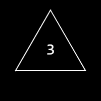
Open the Polygon Generator workspace.
The global variable numSides controls how many sides the polygon should have.
We want to draw a polygon by looping through evenly spaced points around a circle and connecting each point to the next. An important step will be to compute the angle gap between points.
let angleGap = 360 / numSides;This will compute a gap that depends on how many sides the shape has: 120 for a triangle, 90 for a square, 72 for a pentagon, etc...
With the angleGap calculated, create a for loop that goes from 0 to 360, increasing by angleGap each time. During each iteration, you should use the circle formula twice, generating two points
angle+angleGapConnect those two points with a line to form one side of a polygon. If done properly the loop should draw all sides.
Since numSides starts at 3, you should see a triangle when you run the program.
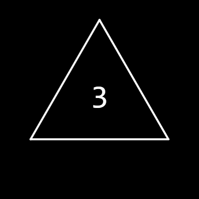
To see different polygons, increase numSides when the mouse is pressed:
function mousePressed() {
numSides += 1;
}With this implemented, run the program again. Each click should change the number of sides and update the polygon.
Open the Spiral Workspace in CodeHS
The spiral pattern is created by generating many circles with an increasing angle, but increasing the radius as the angle gets larger.The
Add a loop to the draw function whose looping variable represents an angle, starting at 0 and increasing all the way to 3000, increasing by 1 each time. The angle is getting so large because we are going to rotate around the center several times to create our spiral.
The key to creating a spiral is to have a different radius for each angle that we generate. Inside your loop you should:
let radius = angle*0.05If this is done properly, you should get a static spiral shape.
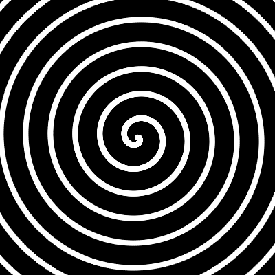
Rotating the image is accomplished by uncommenting the rotation statement that comes right after the translate call.
//rotate(-3*frameCount);
This will cause each call to draw to have a small rotation before each spiral is drawn.
So far we've been using RGB to represent the colors of our shapes, meaning we break our color into the portion of Red, Green, and Blue. Another common way to represent colors is HSB, which stands for:
Open up Google's Color Picker
https://www.google.com/search?q=color+picker
Previously you may have used this to figure out the R, G, B values of a color. But the way that you choose is the more natural choice of adjusting the Hue, Saturation, and Brightness.
When picking a color here, you are not thinking in have to do a few things. The main one is to first pick a Hue using the Slider
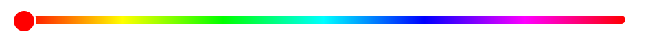
The Hue is a representation of the color all at once. This is where you choose if your color should be red, yellow, or purple. The 'amount' of the color is not chosen yet.
Once you've selected the Hue, you can control the Saturation and Brightness in the upper area by dragging the selection circle around.
Dragging the circle to the left and right affects the Saturation of the color, move all the way to the left and you'll see that the color gets washed out until it is just white.
Dragging the circle up and down affects the Brightness of the color. Your color is brightest at the top, and black at the very bottom.
Once you've chosen your color, you are given several different numerical representations of it.
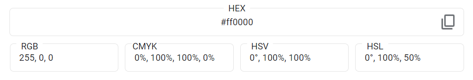
We usually focus on the RGB value, but this time we are focusing on the HSV values (essentially the same as the HSB we will use). The above example is a simple red color and you can see has a hue of 0, and a 100% for the saturation and brightness.
There you will find a non-looping sketch. There is a single global variable named num, which the draw function is gradualy increasing from 0. The background of the sketch is drawn with num as the first value, and 255's for the other
two:
background(num,255,255);
Run your program and watch as it gradually transitions from CYAN (0,255,255) to WHITE (255,255,255). As num passes 255, it will still be considered 255 by p5, so white will be the final color.
Uncomment the line colorMode(HSB);. This tells p5 to interpret the three color values as Hue, Saturation, and Brightness instead. This means that the color has maximum saturation and brightness, while the hue value is transitioning from 0 up.
Run the program and observe that cycling through hue values causes the color to transition through the entire rainbow, eventually landing on red.
Unlike other color values, Hue is not taken out of 255. Intsead it is taken as an angle out of 360. This is because hue is represented an angle:

The example's cycle eventually lands on red because anything greater than 360 is interpreted as a 360. Modify the background statement to use num%360 instead of simply num.
background(num%360,255,255);
The result should be that the color cycles around the rainbow, but values above 360 have 'all 360's removed' and are turned into values back in the range. For example, if num were 400, num%365 would be 35 and that color value would be used.
Run the program again and observe the infinite rainbow cycle that you've created.
Open the Hue Circles Workspace
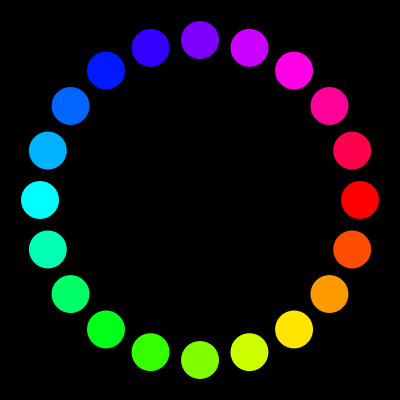
Your task will be to draw 20 circles equally spaced around a circle, each a different color of the rainbow.
Create a for loop whose variable represents the postion angles, going from 0 to 360, increasing by 18 each time. Each iteration you should. Since hue is in this same range, we can simply choose a hue that matches the position angle.
fill(angle, 255, 255);If done properly, running the program should produce the image above.